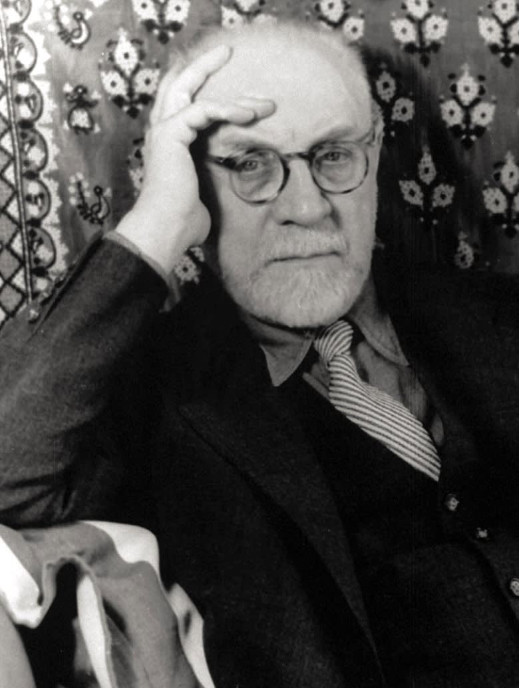

<--Back
Henri Matisse

본명:
앙리 에밀브누아 마티스
출생: 1869년 12월 31일
사망: 1954년 11월 3일
야수파의 창시자로 유명하다. 원래 파리에서 법학을 전공하였으나,
병에 걸려 요양을 하는 동안 어머니가 사주신 물감으로 그림을 그리면서
자신의 진로를 바꾼다. 그의 아버지는 생계가 불확실한 화가가 되는 것에
반대했지만. 끝내 아버지의 반대를 무릅쓰고 그림을 배웠다. 1892년
파리의 장식 미술학교에 적을 두고, 미술학교 수험준비를 하면서 아카데미
쥘리앙에서 부그로의 지도를 받았다.
 Henri Matisse
Henri Matisse